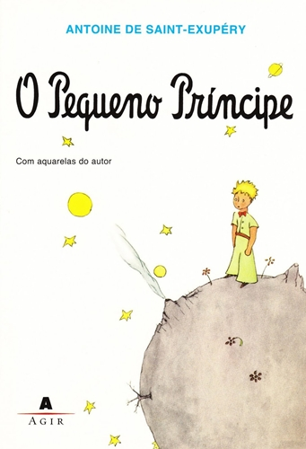
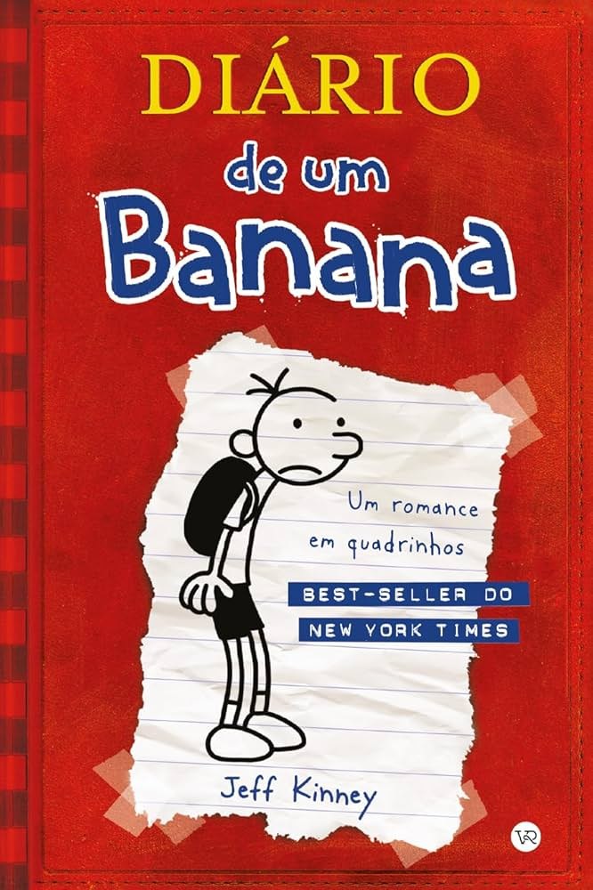

Meu primeiro post
Por:Carmem Vitória
Boas-vindas ao meu novo blog! Aqui vou compartilhar dicas e expeiências de leituras de todos os tipos!
Vou compartilhar conhecimento sobre as diversas literaturas
Por:Carmem Vitória
Boas-vindas ao meu novo blog! Aqui vou compartilhar dicas e expeiências de leituras de todos os tipos!

Por:Carmem Vitória
Com a leitura, podemos abrir mundos com base na imaginação e criatividade, muitos livros são assim, as fantasias,e um exemplo prático é Harry Potter, saiu da imaginação de uma mulher, como alguém pode fazer um mundo tão incrível?
Harry Potter é uma das sagas de livros mais famosas do mundo, com o seu protagonista um menino que carrega uma cicatriz de uma maldição mortal chamada "avada kdavra".
:Mais por algum motivo sobreviveu naquele dia, e teve que morar com oss seu tios trouxas, mais tarde descobre que é um bruxo e irá estudar em uma escola muito peculiar,
chamada Hogwarts, a trama companha as aventuras do protagonista e de seus amigos, contra o lord Voldemort.
:É uma série de livros interessante e envolvente que faz você ficar viciado!
recomendo muito!

Por:Carmem Vitória
O pequeno príncipe, de Amtonie de Saint-Exupéry, conta a história de um pequeno viajante que deixa seu planeta e conhece diferentes mundos e personagens. Ao chegar à Terra, ele encontra um aviador perdido no deserto e, juntos, compartilham história e aprendizado.

Por:Carmem Vitória
Diário deum banana, de Jeff Kinney, acompanha Greg Heffley, um adolescente tentando sobrviver aos desafios da escoa, das amizades e da família enquanto registra tudo em seu diário.

Por:Carmem Vitória
Jogos Vorazes, de Suzanne Collins, apresenta um futuro dividido em distritos, onde jovens são escolhidos para participar de uma competição transmitida para toda a população.

Por:Carmem Vitória
O Diário de Anne Frank reúne os escritos de Anne, uma adolescente judia que registrou sua vida enquanto permanecia escondida com sua família durante a perseguição aos judeus na Segunda Guerra Mundial.